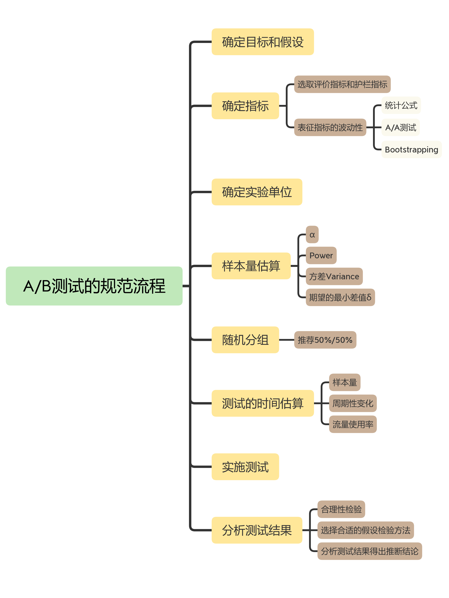

- 00 开篇词 用好A_B测试，你得这么学.md
- 01 统计基础（上）：系统掌握指标的统计属性.md
- 02 统计基础（下）：深入理解A_B测试中的假设检验.md
- 04 确定指标：指标这么多，到底如何来选择？.md
- 05 选取实验单位：什么样的实验单位是合适的？.md
- 06 选择实验样本量：样本量越多越好吗？.md
- 07 分析测试结果：你得到的测试结果真的靠谱吗？.md
- 08 案例串讲：从0开始，搭建一个规范的A_B测试框架.md
- 09 测试结果不显著，要怎么改善？.md
- 10 常见误区及解决方法（上）：多重检验问题和学习效应.md
- 11 常见误区及解决方法（下）：辛普森悖论和实验组_对照组的独立性.md
- 12 什么情况下不适合做A_B测试？.md
- 13 融会贯通：A_B测试面试必知必会（上）.md
- 14 举一反三：A_B测试面试必知必会（下）.md
- 15 用R_Shiny，教你制作一个样本量计算器.md
- 加餐 试验意识改变决策模式，推动业务增长.md
- 导读 科学、规范的A_B测试流程，是什么样的？.md
- 结束语 实践是检验真理的唯一标准.md
导读 科学、规范的A_B测试流程，是什么样的？
你好，我是博伟。
前面两节课啊，我们花了很大力气去学习做A/B测试的理论前提，这也是为了让你夯实理论基础。不过啊，除非你是统计科班出身，否则我都会推荐你，在学习实战的时候呢，也要不断温习统计篇的内容，把理论与实践结合起来。如果觉得有必要，也可以把我在统计篇讲的统计概念和理论延伸开来，通过查看相关统计专业书籍来加深理解。
学完了统计理论，接下来就要开始设计实现做A/B测试了。不过在我总结A/B测试的流程之前呢，我要简单介绍下在实践中做A/B测试的准备工作，主要有两部分：数据和测试平台。
一方面，我们要有数据，包括用户在我们产品和业务中的各种行为，营销广告的表现效果等等，以便用来构建指标。因为A/B测试是建立在数据上的分析方法，正如“巧妇难为无米之炊”，没有数据的话，我们就不能通过A/B测试来比较谁好谁坏。
一般来说，只要是公司的数据基础架构做得好，埋点埋得到位的话，基本的常用指标都是可以满足的。
如果说我们要进行的A/B测试的指标比较新、比较特别，或者数据库没有很全面，没有现成的数据可以用来计算相应的指标，那么可以和数据团队进行协商，看能不能在现有的数据中找出可以替代的指标计算方法。
如果找不到相近的替代指标，那么就要和数据工程团队协商，看能不能构建这个数据，可能需要新的埋点，或者从第三方获得。
另一方面呢，我们要有合适的测试平台，来帮助我们具体实施A/B测试。可以是公司内部工程团队搭建的平台，也可以是第三方提供的平台。对于这些平台，我们在做A/B测试之前都是需要事先熟悉的，以便可以在平台上面设置和实施新的A/B测试。
当然，在做A/B测试时，数据库和测试平台是要通过API等方式有机结合起来的，这样我们在测试平台上设置和实施的A/B测试，才能通过数据来计算相应的指标。
以上的准备工作并不是每次A/B测试都要做的，更多的是第一次做A/B测试时才需要去做的准备，所以更像是A/B测试的基础设施。以下的流程才是我们每次去做A/B测试都要经历的，我把它们总结在一张图中，你可以看一下。

以上就是一个规范的做A/B测试的流程了。你看啊，A/B测试的实践性很强，但大体就是这么几步。在这门课里，我会着重讲最核心的5个部分，也就是确定目标和假设、确定指标、确定实验单位、估算样本量以及分析测试结果。
在整个流程中，除了随机分组的具体实施细节和具体实施测试外，其余环节我都会逐个讲解。你可能会问，为什么不能把全部环节讲解一遍呢？
其实啊，我会侧重讲解A/B测试的基本原理，实践中的具体流程，还有实践中遇到的常见问题及解决办法，这些都是偏经验和方法论的内容。不管你在哪家公司，处在哪个行业，用什么平台去实施A/B测试，这些经验和方法论都是通用的，学完之后你就可以应用到实践中。
至于随机分组的不同随机算法，以及实施测试所用的平台，这些更偏工程实施的细节，公司不同，平台不同，那么实施A/B测试时也会有很大的差别。比如A/B测试的平台，大公司一般会自己开发内部的测试平台，中小型公司则会利用第三方的测试平台。
所以啊，基础篇这几节课呢，我也希望你能在学习的同时，能够跟自己的工作联系起来。如果你在工作中做过A/B测试，但是觉得流程没有很系统化，你就可以把平时做的A/B测试和基础篇的流程进行参照对比，看看还有哪些不足的地方。同时，通过学习基础篇，也会让你知道为什么会有这些流程，它们背后的原理是什么，让你加深对流程的理解，应用起来更加得心应手。
如果你还没做过A/B测试，也没关系。我会结合实际案例，来给你深入讲解。如果有条件，学习完之后你就可以尝试做自己的第一个A/B测试啦！
最后，我还要说明一点。A/B测试的前提是数据，这里牵涉到一个公司的数据架构和埋点策略，更多的是工程和数据库建设的问题，不是我们A/B测试的重点。所以在接下来讲课的时候，我就假设我们已经能够追踪A/B测试所需要的数据了，至于如何追踪这些数据，如何埋点这种工程实施的细节我们这里就不展开讨论了。
好啦，了解了这些，就让我们正式开始A/B测试的旅程吧！
© 2019 - 2023 Liangliang Lee. Powered by gin and hexo-theme-book.